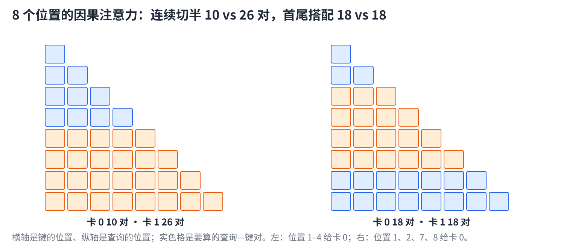
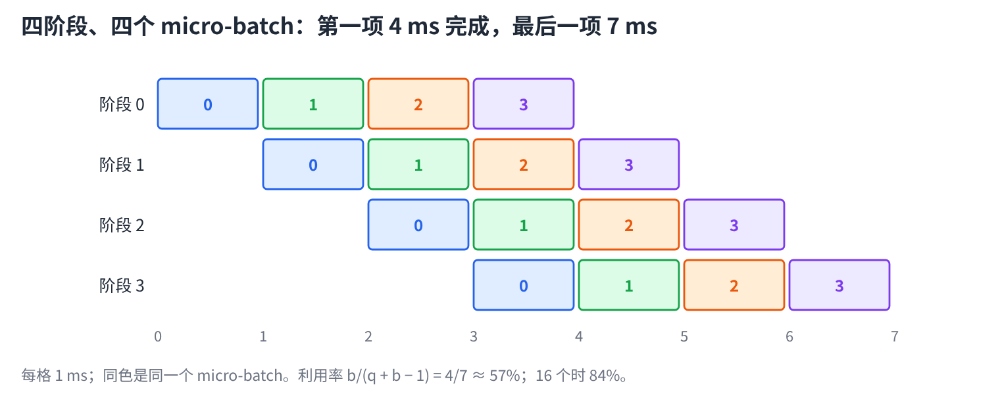
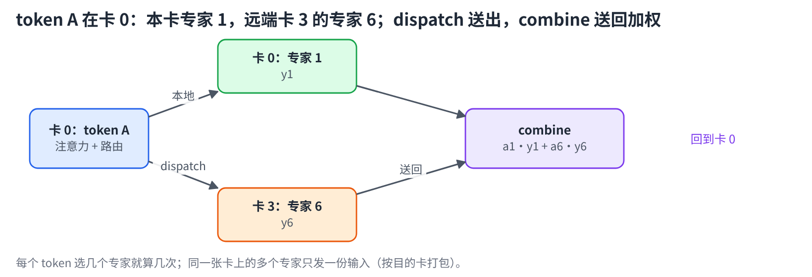
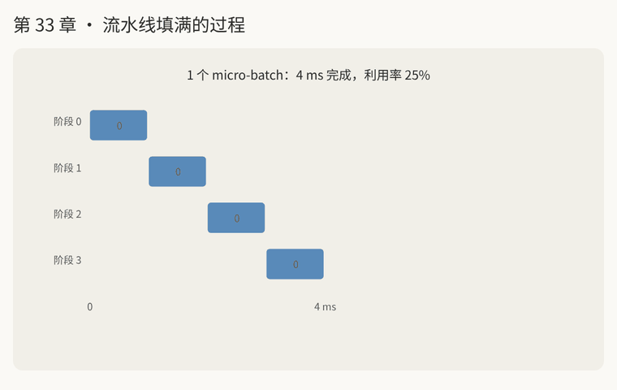

第 33 章 · 上下文、流水线、专家并行：切位置、切层、切专家
本地运行
git clone https://github.com/wikieden/ai-infra-from-constraints
cd ai-infra-from-constraints/code/notebooks
pip install jupyterlab torch numpy
jupyter lab ch33_cp_pp_ep.ipynb也可以下载后直接用 VS Code 打开 .ipynb 运行。需要 GPU 的章节在 Colab 里选「代码执行程序 → 更改运行时类型 → GPU」。
本章回答：长序列按位置切给两张卡，为什么一张卡的活比另一张多 2.6 倍？各卡分别做完 softmax 再平均为什么不对？流水线为什么要很多 micro-batch，最慢的阶段会造成什么？MoE 的 token 怎么送到专家所在的卡再送回？
讲解日期：2026-11-24 · 上一章：第 32 章 数据、张量、序列并行 · 下一章：第 34 章 组合并行与模型规模
对应原文：materials/ai-infra-book/manuscripts/06-超节点.md§6.2.4–§6.2.6 L267–L359（式 6-7，图 6-11 到 6-16）
本章缩写：All-to-All = 全交换（每张卡向其他各卡分别发送不同数据）· dispatch / combine = 派发 / 合并（MoE 把输入送到专家所在卡、把结果送回并加权）· micro-batch = 一个 batch 再切成的小份。全部缩写见 缩写与术语表
讲解
第一步：CP：切同一序列的位置，依赖还在（2026-11-24）
类比：两个人分读一本小说写读后感。 后半本的人要知道前半本发生了什么（远端 K、V），不能只读自己那半本；前半本的人活还少一些（因果）。
原文 L269–L293：上下文并行把长序列的位置分给多张卡，每卡保存自己那段的 Q、K、V，计算这段的注意力输出。因果注意力下，后面位置的查询要用前面卡上的 K、V：可以一次收齐，也可以让 K、V 块沿环传递、边到边用在线 softmax 累计（Ring Attention 是这种调度方式，CP 是工作划分方式）。
负载不均：8 个位置共 \(1 + \cdots + 8 = 36\) 对查询—键；连续切半，前四个 10 对、后四个 26 对，差 2.6 倍。首尾搭配（卡 0 拿 1、2、7、8，卡 1 拿 3、4、5、6），各 18 对。实际常用分块"之"字形，但要保留原始位置和因果掩码。

图 33-1 · 设备边界不会让左下区域的远端依赖消失。
decode 时沿历史位置切：每卡算本段的 \(m_r\)、\(l_r\)、\(u_r\)，再合并：
和第 27 章 tile 之间合并 softmax 一样，只是统计量要跨卡传。不能各卡先做完 softmax 再平均。
一句话：CP 切位置省状态和本地注意力，代价是远端 K、V 交换或统计量归约；因果下要首尾搭配才均衡。
第二步：PP：按层分段，靠 micro-batch 填满（2026-11-24）
类比：洗衣房的洗、烘、叠、包四道工序。 第一筐衣服要走完四道才出来；之后每隔一道工序的时间就出一筐。只有一筐衣服时，另外三台机器大部分时间空着。
原文 L297–L322：流水线并行把层按顺序分成 \(q\) 个阶段，每阶段只存自己的层、只传激活。\(b\) 个就绪的 micro-batch、每阶段 \(t\)：
| 4 阶段 | 总时间 | 利用率 |
|---|---|---|
| 4 个 micro-batch | 7 ms | 4/7 ≈ 57% |
| 16 个 | 19 ms | 16/19 ≈ 84% |

图 33-2 · 左上到右下的空白是填充和排空。
- 阶段不均：1、1、2、1 ms 时第一项 5 ms 完成，之后每 2 ms 一项；慢阶段之前积压，缓冲满了上游停（第 27 章的背压）。按实际耗时划分阶段。
- decode 的依赖：四个独立会话能提供四个 micro-batch；同一会话未来的四个 token 是一条链，提供不了。
一句话：PP 的利用率是 \(b/(q + b - 1)\)；独立 micro-batch 越多越满，最慢的阶段决定节拍。
第三步：EP：把 token 送到专家那儿，再送回（2026-11-24）
类比：医院分诊。 病人在大厅挂号（注意力和路由器在本卡），被分到各科室（专家所在卡）；看完把报告送回大厅汇总（combine）。同一个科室看两个项目，只用跑一趟（按目的卡发送）。
原文 L326–L346：专家并行把专家放在不同卡上。四卡八专家：卡 0 的 token A 选中专家 1（本卡）和专家 6（卡 3）：
- dispatch：把 A 的输入送到卡 3；
- 两边各算一个专家：\(y_1\)、\(y_6\)；
- combine：\(y_6\) 送回卡 0，按路由权重合并 \(a_1 y_1 + a_6 y_6\)。

图 33-3 · 每个 token 选几个专家就算几次；专家在哪张卡，输入就送到哪里。
- 按目的卡发：一个 token 的 8 个专家两两分在 4 张远端卡，4096 维 BF16 输入 8 KiB：按专家发 64 KiB，按卡发 32 KiB。
- 多个 token 时就是 All-to-All：每卡向各卡发数量不等的数据；接收方按专家重排、做矩阵乘、再按 token 编号排回。收得最多的卡通常也算得最多。
- Qwen3-235B-A22B：每个专家 \(3 \times 4096 \times 1536 \times 2 = 36\) MiB，单层 4.5 GiB，94 层 423 GiB；八卡均分每卡 52.9 GiB，再加注意力、路由器、KV 和工作区。
场景代码：一个最小的 dispatch / combine 写法，用 all_to_all_single 按目的卡打包（真实 API）：
import torch
import torch.distributed as dist
# x: [n_tokens, h]；dest[i] 是第 i 行要去的卡（已按目的卡排好序）
send_counts = torch.bincount(dest, minlength=world).tolist()
recv_counts = torch.empty(world, dtype=torch.long, device=x.device)
dist.all_to_all_single(recv_counts, torch.tensor(send_counts, device=x.device)) # 先交换行数
recv = x.new_empty(int(recv_counts.sum()), x.shape[1])
dist.all_to_all_single(recv, x, recv_counts.tolist(), send_counts) # dispatch
# ……本卡专家计算 recv → out……
dist.all_to_all_single(back := x.new_empty(x.shape), out, send_counts, recv_counts.tolist()) # combine
补基础：PP、CP、EP 的 PyTorch 写法见《PyTorch 从里到外》第 21 章。
一句话：EP 两次 All-to-All：输入按目的卡打包送出，专家结果送回再按路由权重合并；不等长，收得最多的卡最忙。
动画演示：流水线填满的过程

可交互版：animations/33-cp-pp-ep.html（滑块：micro-batch 数 1–16；开关：第三阶段变慢到 2 ms）。
怎么看：
- 四行是四个阶段，每格 1 ms，同色是同一个 micro-batch（第二步）；
- 右边显示总时间和利用率 \(b/(q + b - 1)\)；
- 播放时 micro-batch 1 → 4 → 16：利用率从 25% 升到 84%；
- 打开"第三阶段慢"：节拍变成 2 ms，第三阶段前面开始积压。
练习与作答记录
题 1（第一步）：12 个位置的因果注意力分给 3 张卡。连续切三段各多少对？设计一种首尾搭配让三张卡一样多。
作答记录：（待作答）
题 2（第二步）：6 个阶段各 2 ms，要让利用率至少 80%，至少要几个 micro-batch？总时间多少？
作答记录：（待作答）
题 3（第三步）：8 张卡、每卡 16 个专家。一个 token 选 8 个专家，分别在卡 0（本卡）、1、1、2、5、5、5、7。按专家发和按目的卡发各送出多少 KiB（每份输入 8 KiB）？
作答记录：（待作答）
原书实验 6-2 (d)、6-3（L348、L451）。想多练可以做。
口诀
分读小说，后半本要知道前情；前少后多，首尾搭配才匀；
各卡统计量合并，不能各算完再平均；
洗烘叠包，第一筐要走四道，筐多机器才不闲；最慢那道定节拍；
大厅挂号、科室看病、报告送回；同一科室只跑一趟。
本章复习卡片
I125（CP 的因果负载 10 vs 26 与跨卡合并 \(m\)、\(l\)、\(u\)）、I126（PP 的 \((q + b - 1)t\) 与 \(b/(q + b - 1)\)、慢阶段）、I127（EP 的 dispatch / combine、按目的卡打包、36 MiB 专家）。练习做完后，按答错、卡住的地方再补。
附录 · 延伸阅读
留给以后深入学习用，不影响本章主线。★ 是建议先读的。
推荐阅读
| 读什么 | 读哪里 | 读它为了什么 |
|---|---|---|
| ★ AII 第 6 章 | §6.2.4–§6.2.6 L267–L359 | 本章原文 |
| Liu 等，Ring Attention（2023） | §3 | K、V 环形传递的调度 |
| Huang 等，GPipe（2019）；Narayanan 等，PipeDream / 1F1B | 调度一节 | 流水线的 micro-batch 安排 |
| Lepikhin 等，GShard（2020）；DeepSpeed-MoE | EP 一节 | dispatch / combine |
| 补充 · TP、PP、CP | PP、CP 部分 | 本书图解 |
| 第 11 章 MoE | 路由 | 专家选择的来源 |
数学原理
- 因果配对数：位置 \(i\) 看 \(i\) 个键，\(\sum i = n(n+1)/2\)。
- softmax 的可合并性：统计量 \((m, l, u)\) 满足结合律，换基系数 \(e^{m_r - m}\)。
- 流水线：首项 \(qt\)，之后每 \(t\) 一项；不均时节拍 = 最慢阶段。
公式清单
| 公式 | 意思 |
|---|---|
| \(m = \max m_r\)，\(l = \sum e^{m_r - m} l_r\)，\(u = \sum e^{m_r - m} u_r\)，\(o = u/l\) | CP 的跨卡合并 |
| \(T_{\mathrm{PP}} = (q + b - 1)t\)，\(\eta = b/(q + b - 1)\) | 式 (6-7) |
| 输出 \(= \sum_e a_e y_e\) | MoE combine |
代码对照：把本章的数字用代码算一遍
代码
ai-infra/solutions/chapter-code/ch33_cp_pp_ep.py，测试tests/test_ch33.py：
bash cd ai-infra/solutions/chapter-code uv run python ch33_cp_pp_ep.py uv run pytest tests/test_ch33.py
| 讲义 | 写法 | 跑出来 |
|---|---|---|
| 第一步 负载 | causal_pairs(positions) |
36、10 / 26、18 / 18 |
| 第一步 合并 | merge_stats([local_stats(...), ...]) |
与整行一致 |
| 第二步 流水 | pipeline(4, b)、pipeline_uneven([1, 1, 2, 1], 4) |
7 / 19 ms；5、7、9、11 ms |
代码里才看得到的 3 件事：
pipeline_uneven假设缓冲无限：慢阶段前的积压不会让上游停；有限缓冲时上游也会被拖慢。- 测试把 6 个分数切成 1、2、3 段分别合并，结果都和整行相同。
local_stats返回的 \(u\) 是标量值的加权和；真实注意力里 \(u\) 是一个 \(d\) 维向量，合并方式一样。
自己改一改（不影响练习答案）：
- 给
pipeline_uneven加缓冲容量参数，看 1、1、2、1 ms 时前两阶段何时被迫暂停。 - 写一个函数，为 \(n\) 个位置、\(k\) 张卡找最均衡的分组。
- 把
merge_stats改成向量版，验证与softmax(s) @ V一致。